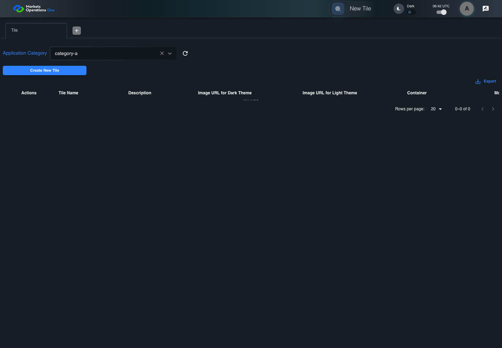
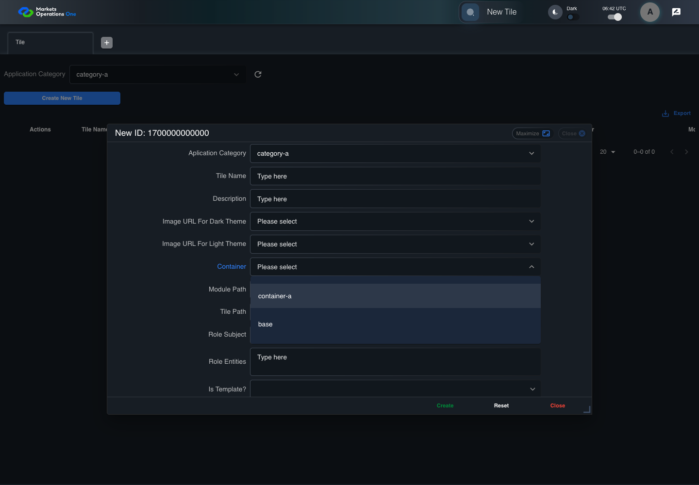
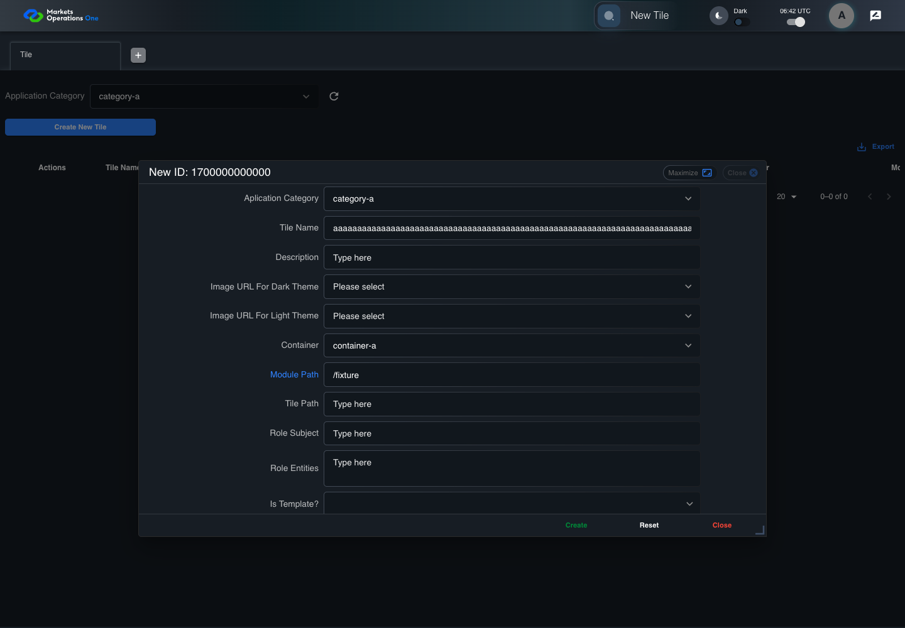

BFF-ADM-037 current BFF administration through actual UI
PASS · application/run-072/bff-adm-037-current-bff-administration-through-actual-ui-dbaf04b0261f-attempt-1 · ACTUAL_APPLICATION_LOCAL_SERVICES
Actual current React and exact-current BFF admin controllers/services/JPA with actual migration DDL in disposable PostgreSQL. Controlled OUD/EMS2 identities and local Spring bootstrap. Fixture SQL seeds/mutates isolated records; service errors are actual database errors. Undefined agreed messages remain unresolved acceptance.
2026-10-22T06:42:29.288Z to 2026-10-22T06:42:36.644Z
Assertions and result · Artifact manifest · Exact run inputs and source hashes
Result SHA-256:26c7b640aed71e9379350592fd217fb0b2667d138cb5b2352a68399198f57ba9Machine observations
- actual-identity-projection.json
e89aca174afd1574ef63de618ee784655637b12bfe2e31798b0db0888a38f26e - actual-migration-schema.json
95baea6973e0b51888aad6f690ed8915b1bc2164cfa3806a49b730c4590e1a1d - baseline-inputs.json
a38aaa69e6836d7ac9db442b0750622f3e1626282f749864f072728c7b9a49ac - bff-boundary.json
16dc0a18542efc10b4bedf21d557ed6573f8d8e4342d3dc8d9edcd1c72cd4582 - committed-ui-submission-comparisons.json
c7d1061e69bb9c1c55775db8815aec072adc4d7f17bcdd7c9d73f6d93fe09384 - creation-clock.json
886480438998b79a676ef10c049e5cdc5c4e8bf27cd159f68d89ec5dfb7a22be - empty-filter-rule-representation.json
6000b15d42efdfb711134c8f6b08d1f1df3d2723caa944d0a8ebf6a31b5a8c08 - fixture-step-10.json
3e8db8fafdf06f6251759be480700e0df96db4b5f2293ccebd9d05a3418e8365 - fixture-step-11.json
4cab1fff49ad58f61012c0ff8451273e5e95d1a64a19bae83195a61ea6df2dfa - fixture-step-6.json
3d3c088d42003d74a3a4229a79bc0a51bcc147ebe15992ae39244138ba4f7778 - fixture-step-7.json
fef9507e01244a9eb18e3c929bb63dc189f4a35a6b422792bbaa20c1dc841f2a - fixture-step-8.json
962b3e93dbdc64133e4e7553e09113b414c99a4961ef60300592d4568b741a02 - fixture-step-9.json
11baa0f05655f4acceeebf5d00b8dc3c812c750881c8a9da8184fd74aeeabb1e - initial-persisted-records.json
b248dbeff72f6987a088e6516c63559ade6e5aeea40ac4e7fcf9bb263da80224 - persisted-after-submit.json
f5c42ab7b064e059430e304be07bb9bb87b245415cf9e0cec159e8a4204c1eee - reference-snapshot-3.json
aa37df67f7c9388eb7fcd97ae59801d3165f79e90d6f2cd1b37a05ba33e10f98 - reference-snapshot-4.json
b61a6b441499d5afdf69ec1f4fa67aa01f4399fe6c580d6b8a5e6335d8fa1bec - ui-origin-bff-requests.json
5eebf2881ddda1cf4207d4eafdf7626f7d7b06e12dda4c52626414e04723970d
Screenshot capture: CAPTURED. Named frames: 26.
Step screenshot evidence: COMPLETE. 25/25 canonical steps have execution screenshots.
Canonical step timeline
Given Admin A uses subject "admin-a" with role "FMO_ADMIN" in an isolated authenticated browser
Execution: PASSED.1. step-01 Visible state after step 1: Given Admin A uses subject "admin-a" with role "FMO_ADMIN" in an isolated authenticated browser
2026-10-22T06:42:31.377Z · 1440×1000
Step: /Users/lushevol/code/github/ratan-release-impact/workbench/tasks/ui-test-coverage-20261022/test-cases.md:16227
SHA-256:6ea79714d57b6f05b4cb6b6c68ded1d1ece0cde7798d15719a901561b7526d20And the controlled Tile fixture records the initial grid rows and persisted values
Execution: PASSED.2. step-02 Visible state after step 2: And the controlled Tile fixture records the initial grid rows and persisted values
2026-10-22T06:42:31.522Z · 1440×1000
Step: /Users/lushevol/code/github/ratan-release-impact/workbench/tasks/ui-test-coverage-20261022/test-cases.md:16228
SHA-256:37b17abe8bc6b507b32276f4d0153d38c71acee765fbaf2f0d67da4b490e58f3And Category 101 has label "category-a" and Import Map 201 has Module Name "container-a"
Execution: PASSED.
3. step-03 Visible state after step 3: And Category 101 has label "category-a" and Import Map 201 has Module Name "container-a"
2026-10-22T06:42:31.575Z · 1440×1000
Step: /Users/lushevol/code/github/ratan-release-impact/workbench/tasks/ui-test-coverage-20261022/test-cases.md:16229
SHA-256:46a8223394b10f887f5999217ffe413af0677f6e2d752ff78daf15493346d7b7And both references belong to "FMO_ADMIN" and the Tile page category filter value is Category 101
Execution: PASSED.
4. step-04 Visible state after step 4: And both references belong to "FMO_ADMIN" and the Tile page category filter value is Category 101
2026-10-22T06:42:31.644Z · 1440×1000
Step: /Users/lushevol/code/github/ratan-release-impact/workbench/tasks/ui-test-coverage-20261022/test-cases.md:16230
SHA-256:736872e40efb46f331f6696929dc757dc582c6fe9c1a5e805fa3499890e07ac2And the controlled creation clock returns 1700000000000 milliseconds
Execution: PASSED.5. step-05 Visible state after step 5: And the controlled creation clock returns 1700000000000 milliseconds
2026-10-22T06:42:31.691Z · 1440×1000
Step: /Users/lushevol/code/github/ratan-release-impact/workbench/tasks/ui-test-coverage-20261022/test-cases.md:16231
SHA-256:5e1466f5f8eeb7cae56b67e39d2d5acf76b3e7151d493ada9139daaf6999d999And the baseline fixture data defines "Tile Name" as "tile-037"
Execution: PASSED.
6. step-06 Visible state after step 6: And the baseline fixture data defines "Tile Name" as "tile-037"
2026-10-22T06:42:31.742Z · 1440×1000
Step: /Users/lushevol/code/github/ratan-release-impact/workbench/tasks/ui-test-coverage-20261022/test-cases.md:16232
SHA-256:2f0a6b2d8811df22197b0a2aa705440c32653880bebb717f4e59c63fc896447bAnd the baseline fixture data defines "Module Path" as "/fixture"
Execution: PASSED.7. step-07 Visible state after step 7: And the baseline fixture data defines "Module Path" as "/fixture"
2026-10-22T06:42:31.791Z · 1440×1000
Step: /Users/lushevol/code/github/ratan-release-impact/workbench/tasks/ui-test-coverage-20261022/test-cases.md:16233
SHA-256:54f716709643bcd647269010e86af7f7d30c69e95b853865dde43956b8748496And the baseline fixture data defines "Tile Path" as "/case-037"
Execution: PASSED.
8. step-08 Visible state after step 8: And the baseline fixture data defines "Tile Path" as "/case-037"
2026-10-22T06:42:31.839Z · 1440×1000
Step: /Users/lushevol/code/github/ratan-release-impact/workbench/tasks/ui-test-coverage-20261022/test-cases.md:16234
SHA-256:d5309d25a9fa00bc0da688d94f01b5aa15518683a749d4c42c7afbbde647931eAnd the baseline fixture data defines "Role Entities" as "E-TRADE"
Execution: PASSED.9. step-09 Visible state after step 9: And the baseline fixture data defines "Role Entities" as "E-TRADE"
2026-10-22T06:42:31.888Z · 1440×1000
Step: /Users/lushevol/code/github/ratan-release-impact/workbench/tasks/ui-test-coverage-20261022/test-cases.md:16235
SHA-256:823e8f7979e9c9f29cc108111224e2824759a6fe04fe40d721e0b83cd55d0fc1And the baseline fixture data defines "Filter Rule" as ""
Execution: PASSED.
10. step-10 Visible state after step 10: And the baseline fixture data defines "Filter Rule" as ""
2026-10-22T06:42:31.938Z · 1440×1000
Step: /Users/lushevol/code/github/ratan-release-impact/workbench/tasks/ui-test-coverage-20261022/test-cases.md:16236
SHA-256:fb9a3d483f1732b91196b7341a4e5234e582d9e940047d31be99d1a956776a28And the baseline Tile references use "Aplication Category" "category-a" and "Container" "container-a"
Execution: PASSED.11. step-11 Visible state after step 11: And the baseline Tile references use "Aplication Category" "category-a" and "Container" "container-a"
2026-10-22T06:42:31.988Z · 1440×1000
Step: /Users/lushevol/code/github/ratan-release-impact/workbench/tasks/ui-test-coverage-20261022/test-cases.md:16237
SHA-256:295442a69f835cd49c9da00bb4ef8cef11f672b8f2d08c9d02752c16f8c13c25And the prepared database uses the inspected migration DDL and reports its applied schema revision
Execution: PASSED.12. step-12 Visible state after step 12: And the prepared database uses the inspected migration DDL and reports its applied schema revision
2026-10-22T06:42:32.038Z · 1440×1000
Step: /Users/lushevol/code/github/ratan-release-impact/workbench/tasks/ui-test-coverage-20261022/test-cases.md:16238
SHA-256:c1fcac03fb6ed4de53f41cfe2f4e91496f392048684ac5a78e8ec51230aa0e50When Admin A clicks the button labeled "Create New Tile" on the Tile administration page
Execution: PASSED.13. step-13 Visible state after step 13: When Admin A clicks the button labeled "Create New Tile" on the Tile administration page
2026-10-22T06:42:32.327Z · 1440×1000
Step: /Users/lushevol/code/github/ratan-release-impact/workbench/tasks/ui-test-coverage-20261022/test-cases.md:16239
SHA-256:bb33e0e7e79472216e3e20c802a579d5b329c5de749b926aedede984128aaf1aThen the dialog titled "new ID: 1700000000000" is visible on the Tile administration page
Execution: PASSED.14. step-14 Visible state after step 14: Then the dialog titled "new ID: 1700000000000" is visible on the Tile administration page
2026-10-22T06:42:32.381Z · 1440×1000
Step: /Users/lushevol/code/github/ratan-release-impact/workbench/tasks/ui-test-coverage-20261022/test-cases.md:16240
SHA-256:4528f633bef80efe6dbec75e4323f8565d94b6ae19a6ec136d1054d66e61b98dWhen Admin A clicks the combobox labeled "Container" in dialog "new ID: 1700000000000"
Execution: PASSED.
15. step-15 Visible state after step 15: When Admin A clicks the combobox labeled "Container" in dialog "new ID: 1700000000000"
2026-10-22T06:42:32.716Z · 1440×1000
Step: /Users/lushevol/code/github/ratan-release-impact/workbench/tasks/ui-test-coverage-20261022/test-cases.md:16241
SHA-256:3c82267d7989dbccb5869dcd937bb0f4747a5e5027a84e6dd5020d54387372e1And Admin A clicks the option labeled "container-a" in the expanded "Container" listbox for dialog "new ID: 1700000000000"
Execution: PASSED.
16. step-16 Visible state after step 16: And Admin A clicks the option labeled "container-a" in the expanded "Container" listbox for dialog "new ID: 1700000000000"
2026-10-22T06:42:33.413Z · 1440×1000
Step: /Users/lushevol/code/github/ratan-release-impact/workbench/tasks/ui-test-coverage-20261022/test-cases.md:16242
SHA-256:9a3a642c873d5ed65022c99bc59ff83ed94a8f804c95566d3744d922250d52ebAnd Admin A fills the textbox labeled "Tile Name" with exactly 255 ASCII "a" characters in dialog "new ID: 1700000000000"
Execution: PASSED.17. step-17 Visible state after step 17: And Admin A fills the textbox labeled "Tile Name" with exactly 255 ASCII "a" characters in dialog "new ID: 1700000000000"
2026-10-22T06:42:33.845Z · 1440×1000
Step: /Users/lushevol/code/github/ratan-release-impact/workbench/tasks/ui-test-coverage-20261022/test-cases.md:16243
SHA-256:054c84bfd095d3af50ab1e118c0184ec6e403354eefd9e639810216e9648cc45And Admin A fills the textbox labeled "Module Path" with "/fixture" in dialog "new ID: 1700000000000"
Execution: PASSED.
18. step-18 Visible state after step 18: And Admin A fills the textbox labeled "Module Path" with "/fixture" in dialog "new ID: 1700000000000"
2026-10-22T06:42:34.288Z · 1440×1000
Step: /Users/lushevol/code/github/ratan-release-impact/workbench/tasks/ui-test-coverage-20261022/test-cases.md:16244
SHA-256:53fa6af088db0d016fba249cdfcad4ecb06137e396ef80097a1742f4d19dee05And Admin A fills the textbox labeled "Tile Path" with "/case-037" in dialog "new ID: 1700000000000"
Execution: PASSED.19. step-19 Visible state after step 19: And Admin A fills the textbox labeled "Tile Path" with "/case-037" in dialog "new ID: 1700000000000"
2026-10-22T06:42:34.721Z · 1440×1000
Step: /Users/lushevol/code/github/ratan-release-impact/workbench/tasks/ui-test-coverage-20261022/test-cases.md:16245
SHA-256:3bda0572e2a3ac334fc1322e45c686fd07606e1cfb14f19df9e7c0b23068c5bcAnd Admin A fills the textarea labeled "Role Entities" with "E-TRADE" in dialog "new ID: 1700000000000"
Execution: PASSED.20. step-20 Visible state after step 20: And Admin A fills the textarea labeled "Role Entities" with "E-TRADE" in dialog "new ID: 1700000000000"
2026-10-22T06:42:35.160Z · 1440×1000
Step: /Users/lushevol/code/github/ratan-release-impact/workbench/tasks/ui-test-coverage-20261022/test-cases.md:16246
SHA-256:cc3fa8e818a323ee896d0539321886e33f3a3f14c54d427d5dc2f9772ffb361fAnd Admin A fills the textarea labeled "Filter Rule" with "" in dialog "new ID: 1700000000000"
Execution: PASSED.
21. step-21 Visible state after step 21: And Admin A fills the textarea labeled "Filter Rule" with "" in dialog "new ID: 1700000000000"
2026-10-22T06:42:35.595Z · 1440×1000
Step: /Users/lushevol/code/github/ratan-release-impact/workbench/tasks/ui-test-coverage-20261022/test-cases.md:16247
SHA-256:8f07477105180ecf048ac1ec197322edfccc8e9bd703a226f6e7cd1216ca3b3bAnd Admin A clicks the button labeled "Create" in dialog "new ID: 1700000000000"
Execution: PASSED.22. step-22 Visible state after step 22: And Admin A clicks the button labeled "Create" in dialog "new ID: 1700000000000"
2026-10-22T06:42:35.854Z · 1440×1000
Step: /Users/lushevol/code/github/ratan-release-impact/workbench/tasks/ui-test-coverage-20261022/test-cases.md:16248
SHA-256:51a4ebcd04fa4cf8a42cc76a8991b1ce25e632ef0794deb3c287b0bff924332eThen the Tile data grid with column "Record Id" contains exactly one row with the create response Record Id on the Tile administration page
Execution: PASSED.23. step-23 Visible state after step 23: Then the Tile data grid with column "Record Id" contains exactly one row with the create response Record Id on the Tile administration page
2026-10-22T06:42:35.904Z · 1440×1000
Step: /Users/lushevol/code/github/ratan-release-impact/workbench/tasks/ui-test-coverage-20261022/test-cases.md:16249
SHA-256:a3bcff7bd2269370b6b1c8c87e5806e00e89385345403a0b51c078acba866105And in the Tile data grid with column "Record Id", its "Tile Name" cell equals the submitted value without truncation on the Tile administration page
Execution: PASSED.24. step-24 Visible state after step 24: And in the Tile data grid with column "Record Id", its "Tile Name" cell equals the submitted value without truncation on the Tile administration page
2026-10-22T06:42:35.990Z · 1440×1000
Step: /Users/lushevol/code/github/ratan-release-impact/workbench/tasks/ui-test-coverage-20261022/test-cases.md:16250
SHA-256:badec95ff042d7542a2fb436ad2192d7ca808169128f8ce06cdec0bc58d2e0c7And the independent persisted-record readback contains exactly 255 ASCII "a" characters in "Tile Name"
Execution: PASSED.25. step-25 Visible state after step 25: And the independent persisted-record readback contains exactly 255 ASCII "a" characters in "Tile Name"
2026-10-22T06:42:36.036Z · 1440×1000
Step: /Users/lushevol/code/github/ratan-release-impact/workbench/tasks/ui-test-coverage-20261022/test-cases.md:16251
SHA-256:c418a6fc8391362232b35c375df8f51ec412cf39c765d10c3a489ef83d204c5d
Additional named frames
Screenshots establish visible state only. Assertions and traces support functional claims.